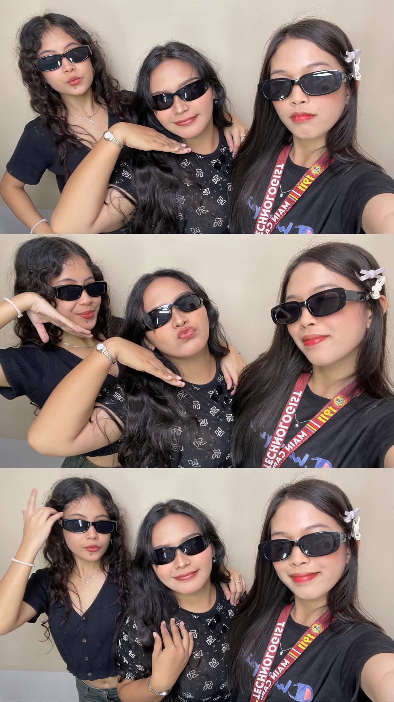

💕 Unforgettable Memory
One of my favorite memories with you. Because this is our first ever photobooth together.
A little jar filled with little things.
A LITTLE PLACE JUST FOR US
A tiny corner of the internet filled with reminders, happy thoughts, silly moments, and all the little things worth keeping.
Pick a little note 💌Whenever you need a smile, there's a little something here for you.
A NOTE JUST FOR YOU
Choose a little note and see what the jar has for you today. ♡
PICK WHAT YOU NEED TODAY
A note for a happy day, a difficult day, or simply because. 💕
JUST BETWEEN US ♡
Some memories are extra special. Enter our little password to unlock this private corner. 💗
There's something sweet waiting inside. Type the password to view our photos and videos.
A LITTLE SURPRISE FOR YOU 🌷
Pick your name to receive a little bouquet made just for you. ♡
A FEW WORDS FROM ME
Hey you, Ash and K,
I made this little place to keep the memories and feelings I might not always know how to say out loud. I want this to be a small reminder of how much I treasure you both and how grateful I am that our paths crossed.
It's crazy to think that we only met at work, not knowing that one day, we would become this close. Look at us now, from being coworkers to sharing random pictures, endless laughter, little adventures, heartfelt conversations, and even the most vulnerable parts of ourselves. Who would have thought that people we simply met at work would become people we would never want to lose? Somehow, along the way, we became almost inseparable, and I'm genuinely happy that we did.
Thank you for trusting me with your thoughts, your feelings, and the parts of yourselves you don't always show everyone. Thank you for making ordinary days feel special and for giving me a friendship where we can be silly one moment and share the deepest things in our hearts the next. I hope we always remember that we don't have to pretend to be okay around each other. We can keep growing, learning, and figuring life out together.
I love you both, and I genuinely hope we continue dreaming of the wonderful future we want for ourselves. I hope we get to witness each other's growth, celebrate our achievements, and support one another through the difficult days. Life may take us in different directions someday, but I hope we never become strangers to the people we are today.
Whenever you visit this little page, I hope these memories remind you how loved and appreciated you are. From the smallest moments to the conversations that meant the world to us, I will always be grateful for them.
Here's to more memories, more dreams, and more years of friendship. I hope that someday, we'll look back at all of this, smile at how far we've come, and be proud that we got to share a little part of our lives with each other.
I love you, Ash and K. I'm so glad we met, and I'll always treasure what we have. Let's keep dreaming of a beautiful future together. ♡
With lots of love, always ♡